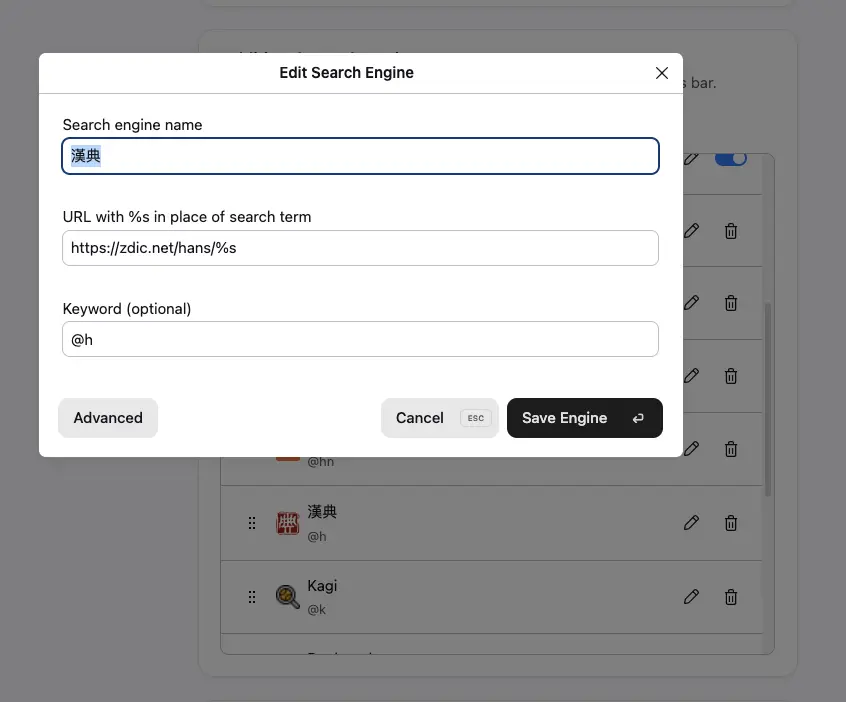
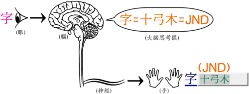
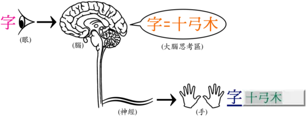
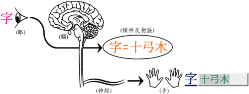

上手倉頡輸入法
最近在學倉頡輸入法，分享一下我為什麼學，以及我是如何上手的，也通過寫博客进行打字練習。
大多数人最先學会的中文輸入法应该是全拼，只需要记住 26 個字母，知道字的拼音，就能熟練使用，上手难度是最低的。缺點是重碼率高，即相同的拼音可存在多個候选字，需要选择实际想打的字。
全拼我用了很長時間，後來換成了双拼，双拼也是按照拼音打字，不同之处在於每個字只需要兩個按鍵就夠了。例如， 倉 字，全拼是 cang ，需要四個按鍵，而双拼是 ch ，只需要兩個按鍵。相比全拼，双拼可以節省輸入、减少手部疲劳、提高打字速度，每个字都由兩個按鍵組成，也會讓打字有一種韻律感。
如果你現在用的是全拼，我很推荐尝试双拼。了解一下鍵位，利用 双拼练习 去熟悉鍵位，形成肌肉記忆，再逼迫自己日常使用双拼，按我的經验，大概一周左右双拼的打字速度就能赶上全拼了。
最近在 推荐哪个形码输入法？ 中看到有人說：
先扯几句自身经历：前几年学的双拼，打字速度有提升，但拼音打字打的忘了怎么写字。
[…]
如果打繁体，强烈推荐仓颉。这几天考虑把仓颉捡起来，因为拆字太有乐趣了。
拆字有趣的说法讓我对倉頡輸入法产生了興趣，于是就找資源学了。
倉頡的好处是打字的重碼很少，不用废勁找字；拆字也算是有點樂趣；某種程度上也能讓我加深對字的記忆，不至於拼音用多了字不會寫；需要打一些偏辟字也更容易些。
我學習先是通讀了一遍 第五代倉頡輸入法手冊，這是倉頡的发明者朱邦復先生寫的，別人扫描上传的一份 PDF。閲讀一遍可以了解倉頡的設計背景、理念、倉頡字母 (也即鍵位布局)、輔助字形 (每個鍵位對應的其他符号)、倉頡的取碼規則，讀完就可以開始練習了。
后來發現的维基教科书上的 倉頡輸入法 教程也很不錯，相比《第五代倉頡輸入法手冊》可讀性更好，講的也很清晰。如果對倉頡的設計背景、理念没興趣，推薦看维基教科书的版本。
和練習双拼一樣，我希望有個頁面可以讓我練習倉頡字母、輔助字形和取碼規則（打完整的字），通過大量練習盡快形成肌肉記憶。但找了一圈没找到滿意的，要麼很多广告，要麼要注冊付費，功能也不符合我需要，於是就 Vibe Coding 了一個練習頁面 ⸺ 倉頡練習，功能基本滿足我需要。
用工具練習了几天，我開始將倉頡作為主要的中文輸入法，双拼作备用。但同時存在双拼和倉頡，当倉頡打字很困难時，我總會逃回双拼。為了強迫自己練習，我就只保留了倉頡，但不可否認的是輸入效率會下降很多。
之後就是大量打字練習，去形成肌肉記憶。要盡早用於日常之中，才有機會去練習日常經常用到的字。
倉頡上手起來要比双拼困难很多，需要記的字母、輔助字形、拆字規則比双拼复杂得多。从我學習到現在差不多一個月，我的打字速度依然趕不上双拼，很多時候打字也還是會卡売。原因有几個：
- 鍵位還不够熟悉
- 輔助字形的對應關系還有點模糊，也没記全 (以上兩點都是因為急於求成，多用工具練習應該可以改善)
- 拆字規則不够熟悉，拆字也需要一點想象力 (這個可以通過多打字熟悉)
字不記得怎麼寫 (字寫的少，一直只用拼音打字，确实會忘字)
如果字不會打
不會打的字可以用拼音打出來，到 漢典 上查。例如閱讀的「讀」我不會，我會通過搜索「閱du」，找到對應的字，然後到漢典查。
在 Zen 浏览器，我將漢典設置為一個快捷查詢 (shortcut)，用
@h触发查詢，需要時就可以快速調用查閲。
图1 Zen 上的漢典 shortcut 配置截图。 如果你用的是 macOS 或 iOS 自帯的倉頡輸入法，z 對應的「重」，不是用來去重的，而是作為一個通配符，有時有的字不知道怎麼拆，也可以多利用。
{kind=link}
倉頡拆字要求對字的笔畫清晰，如果脑子里字的形象模糊的話，就會影响拆字。工具上看着字拆容易，但要在脑字里想象字的形状，再啄磨怎麼拆字，再映射到鍵位上，這個過程一開始會有些难，卡売的感覚也讓人有些挫敗。
一般來說，學習倉頡會經历 3 個階段：
第一個階段，先想象字的形状，然後按取碼規則拆字，再映射到鍵位上，可能還要回憶一下鍵位。
{kind=link}

第二個階段，要先想象字的形状，然後按取碼規則拆字，不用映射鍵位，鍵位己經形成条件反射。
{kind=link}

第三個階段，要先想象字的形状，不用思考拆字，字的輸入己經形成条件反射。
{kind=link}

当達到第三個階段時，應該日常打字就可以比较流暢了。我目前還在二階段，在往三階段努力。
盡管目前用倉頡打字效率不高，但我還是會繼續用下去，直到熟練為止。形碼輸入法還是要比拼音有趣一些，我也不希望長時間只用拼音打字，最後字怎麼寫都忘了。而且因為倉頡出現早，朱邦復先生公開放棄了倉頡輸入法專利權，並且極力推動電腦漢化，所以倉頡的普及度很高，有的游戏會內置倉頡輸入法，却未必會有拼音，學會倉頡或許玩这些游戏時就能起一个中文名了 :P
如果你决定學倉頡，請准备好需要投入大量的時間練習；如果倉頡有的字不知道為什麼這樣拆，歡迎邮件討論；如果你還在用全拼，不想花時間學倉頡，那我強列推薦你試試双拼，上手很快，能提高輸入效率，也能讓手指相對轻松一些。
文章中的示意图的 License 信息：
作者 Akiyao and LucasVB; modified by Cangjie6 under CC BY-SA 3.0. - Brain Neuron.svg, Hand.svg，CC BY-SA 3.0，https://commons.wikimedia.org/w/index.php?curid=62702407